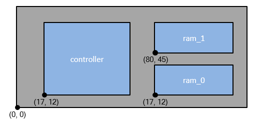

Assemble the
3D-IC by placing, rotating, and arranging the chips. This is the
first physical action in the rule file. The coordinates of each
die should be made available by the layout designer.
In order for the pads on the chips to align
with the landing pads on the interposer (shown in Figure 2) the placements must have the following
lower-left coordinates:
Table 1. Die Placement CoordinatesPlacement Name
|
X (um)
|
Y (um)
|
|---|
controller
|
17
|
12
|
ram_0
|
80
|
12
|
ram_1
|
80
|
45
|
interposer
|
0
|
0
|
Figure 1. Example Placement Coordinates
Procedure
- Open your 3dstack.rules rule
file.
- Add the stack command after
the die definitions as follows:
stack -stack_name assembly \
-die { \
-name interposer
-source interposer
-placement 0 0
-invert
} \
-tier {
-die {-name controller -placement 17 12 -source controller }
-die {-name ram -placement 80 12 -source ram_0 }
-die {-name ram -placement 80 45 -source ram_1 }
}
A tier defines a set of dies
that occupy the same horizontal plane. Since the interposer is at
the bottom of the stack, it occupies a different vertical plane
than the three chips stacked on top of it.
The -source argument specifies
the corresponding sub-circuit cell name in the source netlist if
it is different than the die name.
- Save the rule file and close
it.
- Invoke Calibre 3DSTACK and
generate the overlay view of the 3D-IC by entering the following
command:
calibre -3dstack -create_assembly 3dstack.assembly 3dstack.rules
The -create_assembly invocation
argument only generates the physical view of the stacked ICs. It
does not perform any verification checks. The physical overlay view
is useful for checking the layout, layer, and placement definitions
in your rule file without performing a full run.
- Open the assembly in Calibre DESIGNrev using the following command:
calibredrv 3dstack.assembly.oas
- Press 9
to change the view depth.
This allows you to see the
detailed layout within the placements.
- Close Calibre DESIGNrev and
continue to “Defining Layer Connectivity”.
Examples
…
###############################
# Arrange chips in 3DSTACK
###############################
stack -stack_name assembly \
-die { \
-name interposer
-source pInterposer
-placement 0 0
-invert
} \
-tier {
-die {-name controller -placement 17 12 -source pController }
-die {-name ram -placement 80 12 -source pRam0 }
-die {-name ram -placement 80 45 -source pRam1 }
}
…